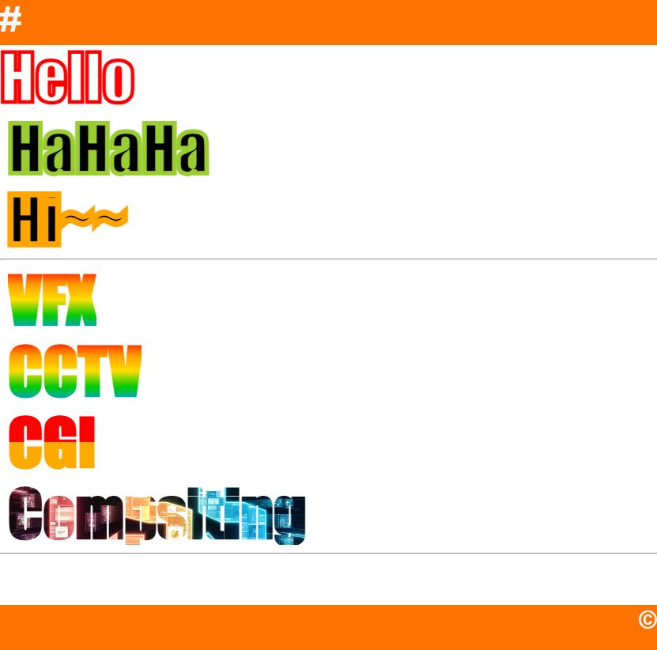
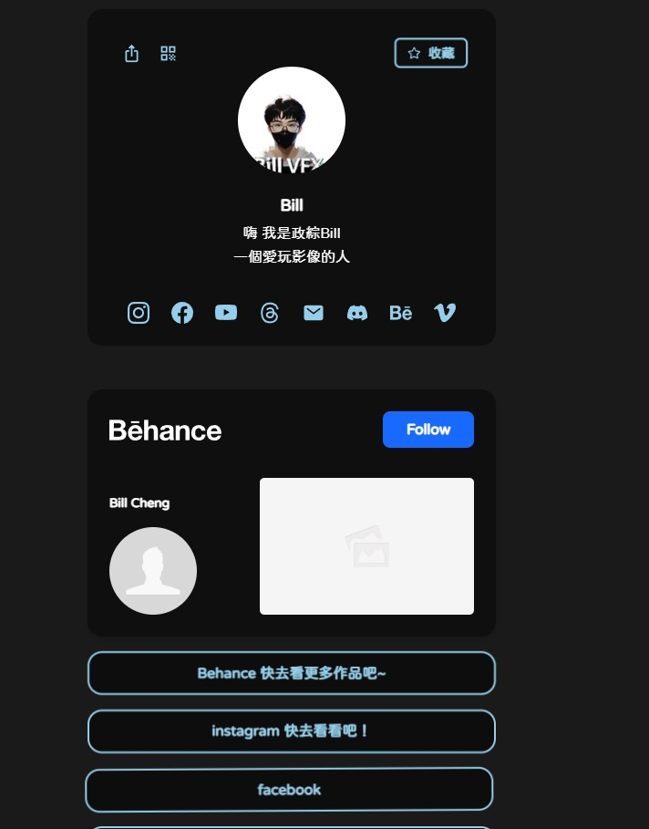
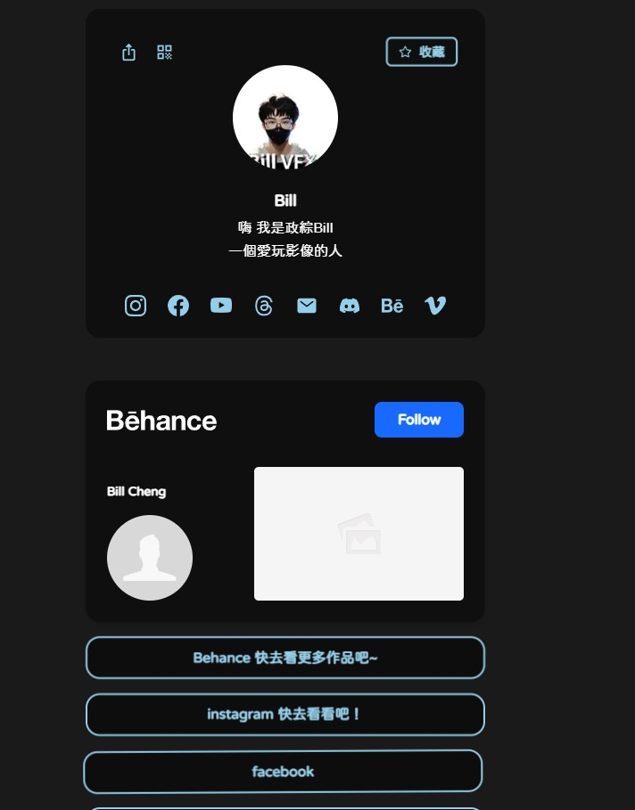
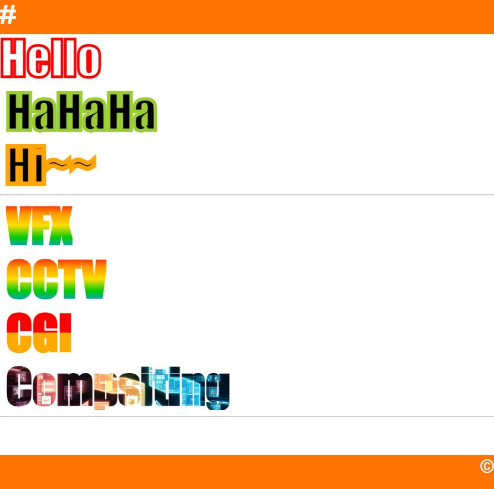
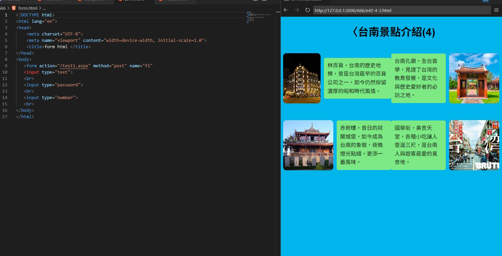
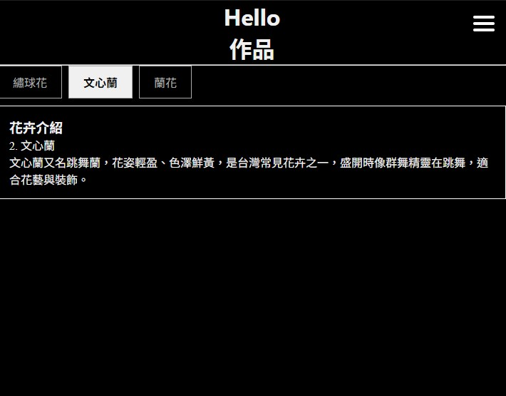

CSS文字樣式製作
創作理念
透過這個練習學會怎麼用CSS製作文字樣式
創作理念:
我希望把作業整理起來，讓自己也能回顧之前寫過的程式！
下面那張是參考圖~
 

創作理念:
這是最易開始學HTML做的練習

創作理念
透過這個練習學會怎麼用CSS製作文字樣式
創作理念
我希望透過這個網頁，把我喜歡的台南分享給大家，也學到CSS文繞圖技巧
創作理念
透過這個練習，學到了JavaScript內容選單技巧
創作理念
透過這個練習，學到了JavaScript事件處理(滑鼠點擊 按鈕變色)